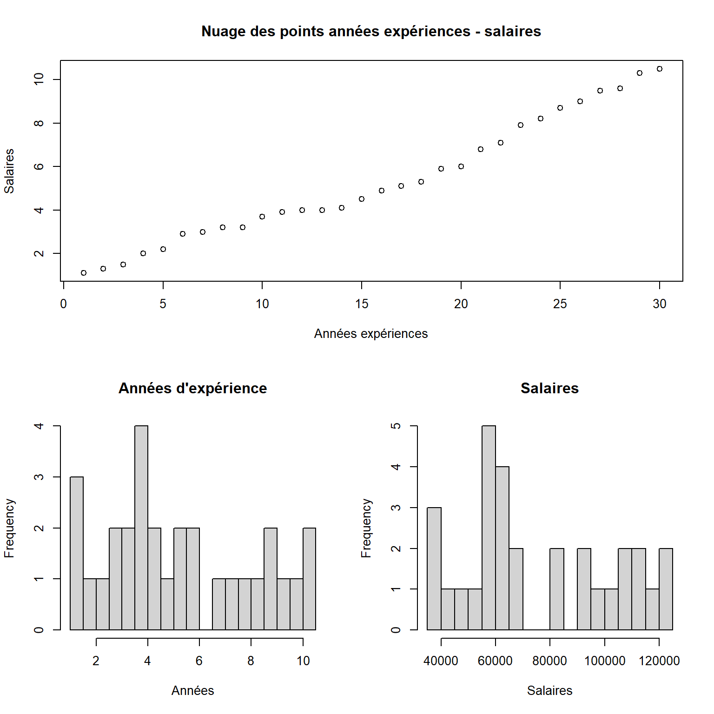

Ayons un aperçu des 10 premières lignes des données sur lesquelles nous allons démontrer une application de la méthode d’estimation par les OLS simples.
| annees | salaire |
|---|---|
| 1.1 | 39343 |
| 1.3 | 46205 |
| 1.5 | 37731 |
| 2.0 | 43525 |
| 2.2 | 39891 |
| 2.9 | 56642 |
| 3.0 | 60150 |
| 3.2 | 54445 |
Nous pouvons faire des graphiques pour afficher la distribution des colonnes (par des histogrammes) et la tendance avec un graphique

Notre but est donc d’exprimer le salaire comme une fonction des années d’expérience. Nous cherchons une relation de la forme \(salaire_i = \hat{a} + \hat{b} * experiences_i + u_i\) telle que les coefficients estimés \(\hat{a}\) et \(\hat{b}\) minimisent la somme du carrées des erreurs.
Nous appliquons les relations que nous avons trouvées dans lorsque nous avons résolu le programme d’optimisation du Lagrangien.
Ainsi nous calculons d’abord \(\hat{b}\) puis \(\hat{a}\).
La formule nous indique que \[\hat{b} = \frac{\sum_{i=1}^N(y_i - \bar{y})(x_i - \bar{x})}{\sum_{i=1}^N (x_i - \bar{x})^2}\]
| Sommes | Moyennes | |
|---|---|---|
| Années Expériences (X) | 159.4 | 5.313333 |
| Salaires (y) | 2280090.0 | 76003.000000 |
Nous allons donc calculer les statistiques intermédiaires en ajoutant des colonnes à notre tableau initial.
| \(X\) | \(Y\) | \(X - \bar{X}\) | \(y-\bar{y}\) | \((y-\bar{y})(X - \bar{X})\) | \((X - \bar{X})^2\) |
|---|---|---|---|---|---|
| 1.1 | 39343 | -4.213333 | -36660 | 154460.80 | 17.752178 |
| 1.3 | 46205 | -4.013333 | -29798 | 119589.31 | 16.106844 |
| 1.5 | 37731 | -3.813333 | -38272 | 145943.89 | 14.541511 |
| 2.0 | 43525 | -3.313333 | -32478 | 107610.44 | 10.978178 |
| 2.2 | 39891 | -3.113333 | -36112 | 112428.69 | 9.692844 |
| 2.9 | 56642 | -2.413333 | -19361 | 46724.55 | 5.824178 |
Nous calculons donc \(\hat{b}\) à partir des valeurs générées dans le tableau.
Le coefficient de \(\hat{b}\) estimé est égal à 9449.96.
Nous pouvons aussi déterminer la valeur de \(\hat{a}\) en utilisant sa formule qui est \(\hat{a} = \bar{y} - \hat{b}\bar{x}\). Ainsi \(\hat{a}\) est égal à 2.5792210^{4}